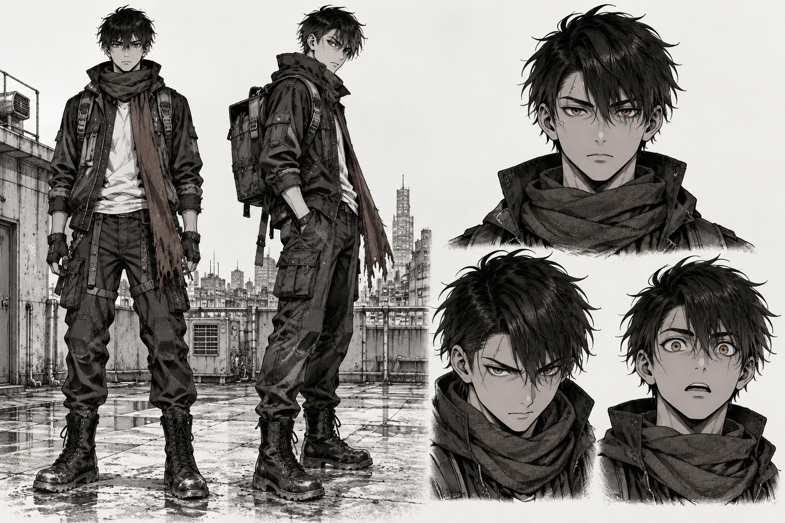
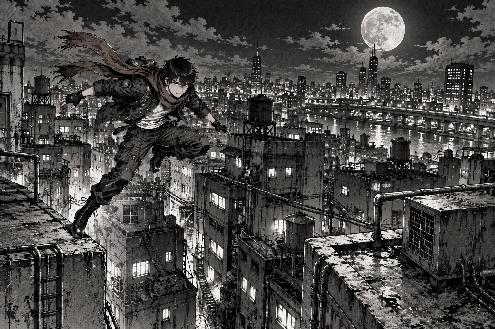

openai/gpt-image-2.5-sunburst via OpenRouter · quality medium
· slowest image call 27.3s
· total $0.0701

The sheet. 3:2 · 1536x1024 · generated from the DNA text alone, no references. This is the reference.Close-up. 1:1 · 1024x1024 · sheet sent in input_references.

Wide shot. 3:2 · 1536x1024 · same sheet, same DNA, different shot.
The only question: is this recognizably the same person in all three —
same face, same scar through the right eyebrow, same frayed scarf — from a close-up and from a wide shot?
If yes, the kernel holds and the build can proceed. If no, that is worth knowing before five stations are built on top of it.
Three numbers the spec was guessing at.
Set GENERATION_TIMEOUT_MS above 27.3s — try 90000.
Real cost at medium: $0.0114 for 3:2, $0.0270 for 1:1
— update the cost table in devpost/spec.md, which is currently an estimate.
Returned dimensions: 1536x1024 at 3:2, 1024x1024 at 1:1
— not ours to request any more, so size panel CSS from the ratio.